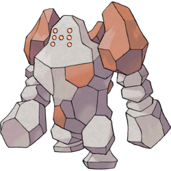
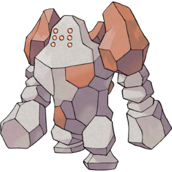
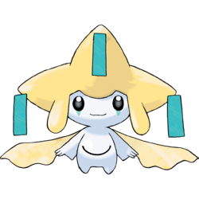
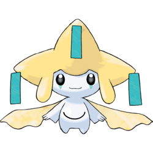

Generation 3
Generation 3 is the third series of games to be released by Gamefreak. It was also the first to release remakes of games from a previous generation with Generation 1 remakes Pokemon FireRed and Pokemon LeafGreen being produced during this Generation bringing the total up to five games being released this generation. It is also important to recognize that similar to Generation 2. Pokemon Emerald released more than a year later than Ruby and Sapphire and came with a variety of fixes and reworks from the original to games. Pokemon Emerald also features both evil societies Team Magma and Team Aqua whereas only one of these is featured in both of the other games. Team Magma led by Maxie being exclusive to Ruby and Team Aqua led by Archie being exclusive to Sapphire. The generation 3 games have the same three starters in Treecko the grass type, Torchic the Fire type and Mudkip the water type. Main characters Brendan and May are the playable characters of this Generation. Generation 3 would receive a remake in Generation 6 names Pokemon Omega Ruby and alpha Sapphire, Emerald would not receive a remake. Generation 3 would release in Early 2003 Internationally and in Late 2002 in Japan and Emerald would release in mid 2004 in Japan and in mid 2005 Internationally for the GameBoy Advanced Nintendo System.
Gameplay Mechanics
Because it was not compatable with the previous two generations due to the change of console Gamefreak was forced to make the most changes and enchancements to the pokemon format to make a great pull for the game whivh resulted in
- 103 new moves
- 135 new pokemon and new type combinations for existing ones
- The Pokemon storgae system changed from a text based system to a full graphical interface
- added 77 abilities, special atributes which affected stats in and out of battle for a pokemon
- Weather which affected pokemon in a battle such as hail which would damage pokemon between moves in a battle
- Double battles where contestants would put out two pokemon instead of the traditional one
- seven new pokeball types which were more effective at catching specific types of pokemon
Region
The Hoenn region was made for Generation 3, the region is South of Generation 4's Sinnoh region. The region is full of water making up a majority of the map and where ther is land it is mostly forest with a small mountain range in the North West splitting it from the rest of the world. Hoenn is based off of the real Japanese area of Kyushu. As there is a Generation 1 remake in this Generation The kanto region appears mostly untouched from the original Generation 1 games but with the new full colour graphical interface. Similar to Generation 2's Johto Hoenn only has two major cities with the rest mostly being jungle or seaside settlements gor gyms and pokestops.
Legendaries
Generation 3 has ten legendary Pokemon with the three titans nicknamed by the community as he "Regis" in Regice, Registeel and Regirock as well as the Eon Duo in Latios and Latias. The weather trio of Rayquazza, Groudon and Kyogre as well as Jirachi and Deoxys. You can only obtain one of the Eon duo based of the game that you purchased. Latios is available for capture in Pokemon Ruby as a roaming pokemon after defeating the elite four and Latias is available in Sapphire as a roaming pokemon after you hjave defeated the elite four. In Sapphire the player gets a choice as to which one becomes the roaming pokemon. The regis are all available in all of the games of this generation, in the Desert ruins for Regirock, the Island Cave for Regice and the Ancient Tomb is where you can find registeel. The weather Trio is available depending on the version you bought aswell with Rayquazza being found in the sky pillar after defeating the elite four in ruby and sapphire and before defeating the elite four in emerald. Groudon is found at the cave of origin in Ruby and Kyogre is found there too in sapphire in both instances they can be caught before the elite four. Deoxys and Jirachi are unavailable in these games.

 



 
